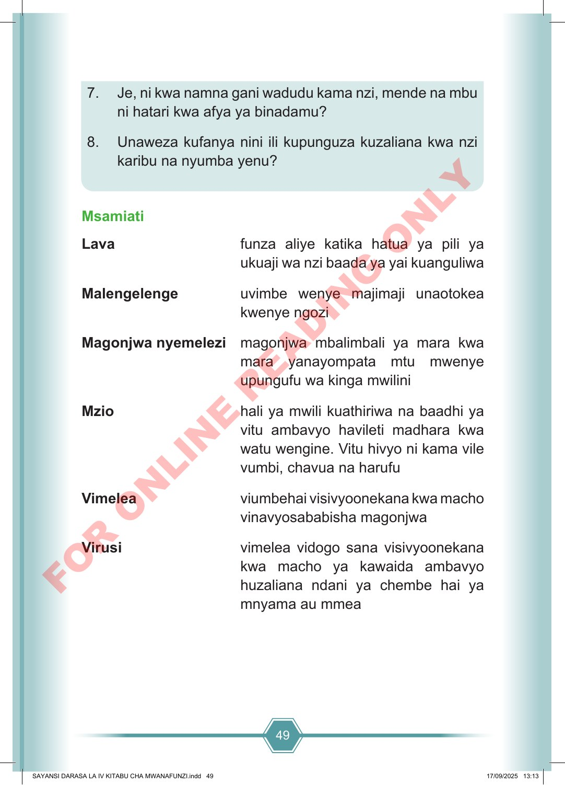

49 7. Je, ni kwa namna gani wadudu kama nzi, mende na mbu ni hatari kwa afya ya binadamu? 8. Unaweza kufanya nini ili kupunguza kuzaliana kwa nzi karibu na nyumba yenu? Msamiati Lava funza aliye katika hatua ya pili ya ukuaji wa nzi baada ya yai kuanguliwa Malengelenge uvimbe wenye majimaji unaotokea kwenye ngozi Magonjwa nyemelezi magonjwa mbalimbali ya mara kwa mara yanayompata mtu mwenye upungufu wa kinga mwilini Mzio hali ya mwili kuathiriwa na baadhi ya vitu ambavyo havileti madhara kwa watu wengine. Vitu hivyo ni kama vile vumbi, chavua na harufu Vimelea viumbehai visivyoonekana kwa macho vinavyosababisha magonjwa Virusi vimelea vidogo sana visivyoonekana kwa macho ya kawaida ambavyo huzaliana ndani ya chembe hai ya mnyama au mmea SAYANSI DARASA LA IV KITABU CHA MWANAFUNZI.indd 49 SAYANSI DARASA LA IV KITABU CHA MWANAFUNZI.indd 49 17/09/2025 13:13 17/09/2025 13:13 F O R O N L I N E R E A D I N G O N L Y